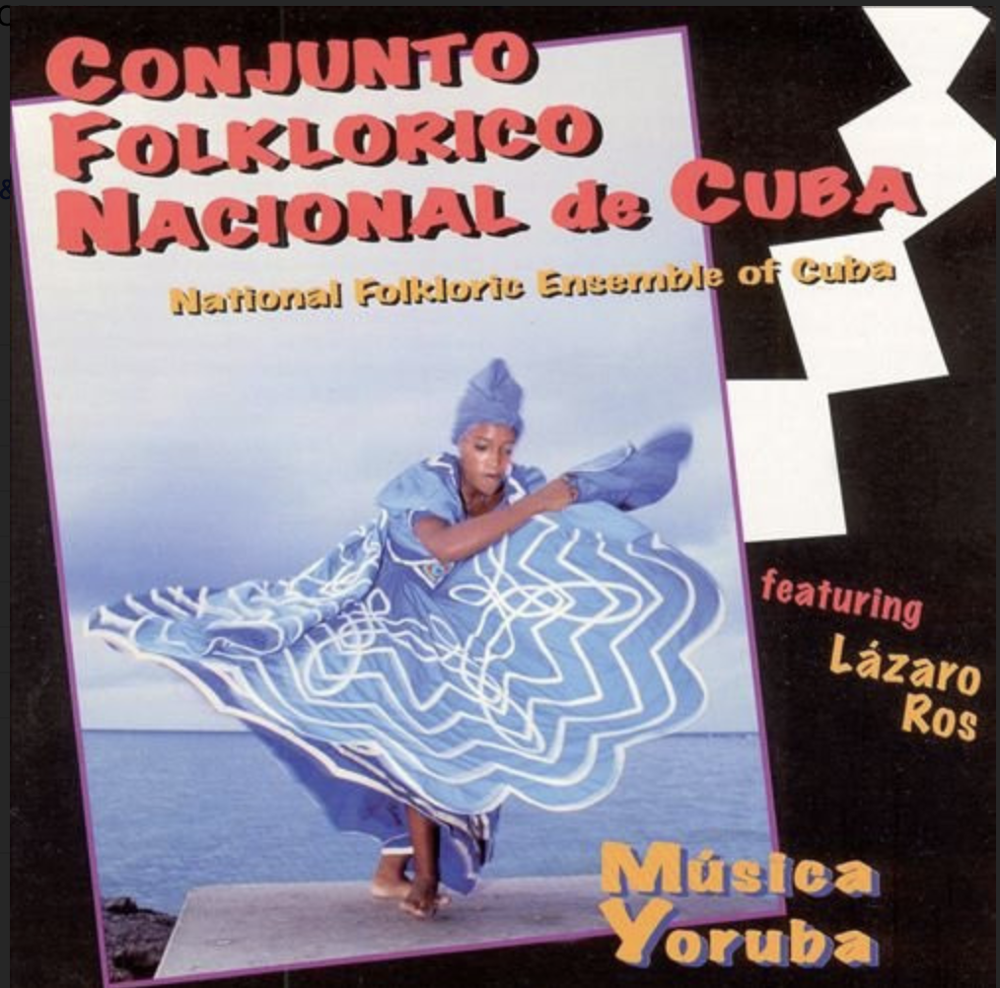

Música Yoruba – Conjunto Folklórico Nacional de Cuba
MÀWÒ... ò́ ♪
| 1 - ELEGGUÁ | 0:00--1:45 | OLUMBANSHÉ | barasuayo |
| 1:45--2:28 | CHACHÁLOKPAFÚÑ | ochimini | |
| 2 - OBATALÁ | 0:00--3:01 | RUMBA OBATALÁ | iya lagua |
| 3:01--5:02 | OBATALÁ (INTRO) | baba layé o | |
| 5:02--5:35 | REZO OBATALÁ | jekua o | |
| 5:35--5:50 | CHACHÁLOKPAFÚÑ | mo ba le | |
| 5:50--6:05 | OGGUÉ | eleri ifa | |
| 6:05--6:46 | IYESÁ | oba se ye | |
| 3 - YEMAYÁ | 0:00--2:16 | YAKOTÁ | yemaya asesu |
| 2:16--3:37 | SOKU TA NIWO | sokun tani wo | |
| 3:37--4:11 | YAKOTÁ | barago ago yemaya | |
| 4:11--4:54 | OMOLODE | omolode | |
| 4:54--5:10 | WOLENCHE (DADA) | ogun fele guele | |
| 5:10--5:24 | ÑONGO | a e iyo | |
| 5:24--5:56 | OMOLODE | oluba chikini | |
| 5:56--6:25 | OMOLODE | emi odé omo odé | |
| 6:25--6:37 | OMOLODE | chikini alamó dansé | |
| 6:37--7:24 | ALARÓ | ago lona o yalé | |
| 7:24--8:14 | ALARÓ | ||
| 8:14--8:37 | TANI IBOYA | ago lona o yalé | |
| 8:37-- | TANI IBOYA | ||
| 4 - CHANGÓ | 0:00--0:47 | CHACHÁLOKPAFÚÑ | ayele o |
| 0:47--1:18 | CHACHÁLOKPAFÚÑ | alakata nigoba | |
| 1:18--1:33 | CHACHÁLOKPAFÚÑ | alakata nigoba | |
| 1:33--4:33 | META-META | oba ibo | |
| 5 - OYÁ | 0:00--2:00 | (NO TOQUE) | ayaba de milé o |
| 2:00--2:40 | (NO TOQUE) | oya wimi loro | |
| 2:40--3:29 | (NO TOQUE) | ayiloda iyá okuó | |
| 3:29--3:51 | (NO TOQUE) | oya de mariwo | |
| 3:51--4:24 | (NO TOQUE) | jere mi ocha | |
| 4:24--5:07 | (NO TOQUE) | olele | |
| 6 - ORULA | 0:00--0:19 | ORULA | yo ko bi o bo obi |
| 0:19--0:59 | ORULA | eriki lagua se | |
| 0:59--1:39 | ORULA | ifa o un ko | |
| 1:39--2:08 | ORULA | mayele kun fele ifa | |
| 2:08--2:31 | ORULA | yo ko bi o bo obi | |
| 7 - ODDUDUA | 0:00--1:19 | ODDUDUA | okuo ago lona |
| 1:19--2:21 | ODDUDUA | eki baba ofu a e | |
| 2:21--2:46 | ODDUDUA | lesi mam bo-o mwalache iré | |
| 2:46--4:04 | ODDUDUA | odula we eke odumé | |
| 4:04--5:16 | ODDUDUA | bromu awa loréré | |
| 8 - BABALÚ AYÉ | 0:00--0:21 | BARIBA OGÉ DE MA (BABALU AYE) | bariba ogue de ma |
| 0:21--1:36 | BARIBA OGÉ DE MA (BABALU AYE) | aberiku to agua | |
| 1:36--2:41 | BARIBA OGÉ DE MA (BABALU AYE) | baba sorroso | |
| 2:41--3:11 | YEGUA | towe towe | |
| 3:11--3:45 | YEGUA | sun yagué asoyín | |
| 3:45--4:26 | YEGUA | ma edá | |
| 4:26--4:43 | YEGUA | oda é oda é | |
| 4:43--5:06 | YEGUA | yina yina mbo lá | |
| 5:06-- | OLOKUN (LA SALIDA) | ambe ala fele tó | |
| 9 - ELEGGUÁ | 0:00--0:55 | LATOKPA | ago ibara |
| 0:55--1:23 | CHACHÁLOKPAFÚÑ | so sa so |